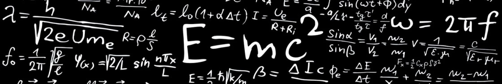

Гигорчук Данііл Дмитрович
Видатні вітчизняні та закордонні вчені-фізики.

Галілео Галілей

Галілео Галілей – вважається засновником не лише експериментальної, але значною мірою і теоретичної фізики. Він є основоположником експериментально-математичного методу вивчення природи. Саме від нього бере початок фізика як наука. Найважливішим вкладом Галілео Галілея в науку була свідома й послідовна заміна пасивного спостереження активним експериментом. Результатами цих експериментів стали зроблені ученим наукові відкриття.
Нікола Тесла

Нікола Тесла (1856-1943) – винахідник в області електротехніки і радіотехніки сербського походження. Ніколу називають батьком сучасної електрики. Він зробив безліч відкриттів, і винаходів отримавши більше 300 патентів на свої творіння в усіх країнах, де працював. Нікола Тесла був не тільки фізиком теоретиком, але і блискучим інженером. Тесла відкрив змінний струм, бездротову передачу енергії, електрику, його роботи привели до відкриття рентгена, створив машину, яка викликала коливання поверхні землі. Нікола передбачав настання ери роботів, здатних виконувати будь-яку роботу. Він відкрив явище обертового магнітного поля, на основі якого побудував електричні генератори З 1889 року приступив до досліджень струмів високої частоти і високої напруги У 1891 році на публічній лекції Тесла описав і продемонстрував принципи радіозв’язку. У 1893 році впритул зайнявся питаннями бездротового зв’язку і винайшов щоглових антену.
Ісаак Ньютон

Ісаак Ньютон (1643-1727) – один з батьків класичної фізики. Обґрунтував рух планет Сонячної системи навколо Сонця, а також настання припливів і відливів. Ньютон створив фундамент для сучасної фізичної оптики. Вершиною його робіт є відомий закон всесвітнього тяжіння. Закони Ньютона являють собою основи класичної механіки. Перший закон Ньютона пояснює збереження швидкості тіла при скомпенсованих зовнішніх впливах. Другий закон Ньютона описує залежність прискорення тіла від прикладеної сили. З трьох законів Ньютона можуть бути виведені інші закони механіки. Він сформулював емпіричний закон теплообміну й побудував теорію швидкості звуку. У математиці Ньютон паралельно з Готфрідом Лейбніцом розвинув числення нескінченно малих, працював з рядами, узагальнив біном Ньютона та запропоновував метод Ньютона розв’язування нелінійних рівнянь.
Альберт Ейнштейн

Альберт Ейнштейн – німецький фізик, творець загальної теорії відносності. Припустив, що всі тіла не притягують один одного, як вважалося з часів Ньютона, а викривляють навколишній простір і час. Ейнштейн написав більше 350 робіт з фізики. Є засновником спеціальної (1905) і загальної теорії відносності (1916), принципу еквівалентності маси і енергії (1905). Розробив безліч наукових теорій: квантового фотоефекту і квантової теплоємності. Разом з Планком, розробив основи квантової теорії, що є основою сучасної фізики.
Склодовська-Кюри Марія

Склодовська-Кюри Марія (1867 – 1934) – фізик і хімік. Народилася в Польщі в сім’ї вчителя, працювала у Франції. Вона – перша жінка-професор Паризького університету. Марія Склодовська-Кюри разом з чоловіком П. Кюрі відкрила радіоактивні елементи полоній і радій і дослідила їхні властивості. Вона розробила класичний метод обробки і аналізу уранових руд, протягом багатьох років досліджувала властивості радіоактивного проміння, його дію на живі клітини і т.д. Марія Склодовська-Кюри двічі удостоїлася Нобелівської премії з фізики і хімії.
Ампер Андре Марі
.jpg)
Ампер Андре Марі (1775 – 1836) – видатний французький фізик і математик, один з основоположників електродинаміки. Ампер ввів у фізику поняття «електричний струм» і побудував першу теорію магнетизму, що ґрунтується на гіпотезі молекулярних струмів і установив кількісні співвідношення для сили цієї взаємодії. Максвелл назвав Ампера «Ньютоном електрики». Ампер працював також у галузі механіки, теорії імовірностей і математичного аналізу.